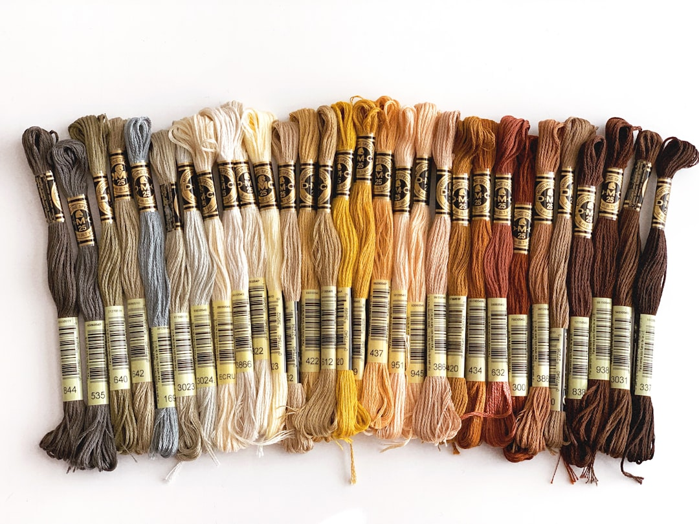

Australia's stunning coastline offers endless inspiration for contemporary branding, providing a distinctive aesthetic foundation that resonates both locally and internationally. Coastal-inspired design transcends mere beach imagery, capturing the essence of oceanic environments through subtle color palettes, textures, and atmospheric qualities that evoke natural beauty.
At Salt & Frame, we've developed an approach that integrates these coastal influences into professional branding without resorting to clichéd nautical themes. The result is visual identities that feel authentically Australian—warm, relaxed, yet undeniably sophisticated.
Understanding Coastal Aesthetics
The Australian coast presents diverse landscapes, from pristine white sand beaches to rugged cliffsides and vibrant coral reefs. Each environment offers distinct visual characteristics worth exploring for branding applications. The key lies in abstracting these qualities into design elements that suggest rather than explicitly depict coastal environments.
Coastal aesthetics center on natural light quality, organic textures, weathered materials, and the interplay between earth, water, and sky. These elements translate into design through careful color selection, material choices, and compositional strategies that mirror the balanced, harmonious nature of coastal ecosystems.
Color Palettes Inspired by the Ocean
Oceanic color palettes extend far beyond obvious blues. The Australian coast presents subtle sand tones ranging from warm beige to cool gray, soft whites reminiscent of sea foam, muted greens from coastal vegetation, and coral-inspired warm accents. These colors work harmoniously because nature has already perfected their relationships.
Implementing coastal colors requires restraint. Rather than saturating designs with oceanic hues, we use them as accents within predominantly neutral frameworks. A touch of sea-inspired blue against warm sand tones creates visual interest without overwhelming compositions. This approach maintains contemporary minimalist sensibilities while adding geographical specificity.
"The best coastal branding doesn't shout 'beach'—it whispers the memory of ocean breezes and sun-warmed sand."
Textures and Materials
Coastal environments feature distinctive textures—smooth river stones, weathered driftwood, fine sand, rough coral, and rippled water surfaces. These tactile qualities inspire both visual and material choices in branding applications. Matte finishes evoke sand and stone, while subtle sheens suggest water's reflective surface.
In print materials, texture choices reinforce coastal themes through substrate selection. Natural fiber papers, uncoated stocks, and materials with visible grain reference organic coastal elements. Digital designs can incorporate subtle texture overlays or patterns derived from natural forms, adding depth without cluttering compositions.
Typography with Coastal Character
Typography selection for coastal-inspired branding balances contemporary clean lines with organic warmth. Sans-serif fonts with slightly rounded terminals soften the aesthetic without sacrificing professionalism. Letter spacing might be slightly more generous, creating breathing room that mirrors the expansive coastal atmosphere.
Avoid overly geometric or harsh typefaces that conflict with coastal gentleness. Similarly, decorative or script fonts often feel contrived in coastal contexts. The goal is typography that feels effortless and natural, supporting rather than dominating the overall aesthetic.
Photography Style for Coastal Brands
Photographic approach significantly impacts coastal branding effectiveness. Images should emphasize natural lighting, preferably captured during golden hours when sun warms tones naturally. Compositions favor negative space, allowing subjects to breathe within frames much like objects exist within coastal landscapes.
Authenticity proves crucial. Stock imagery of generic beaches rarely captures the specific character that makes Australian coastal branding distinctive. Location-specific photography, even when not explicitly showing beaches, carries atmospheric qualities unique to Australian coastal regions—the particular light quality, vegetation types, and architectural styles.
Subtle Nautical Elements
When incorporating recognizably nautical elements, extreme subtlety prevents designs from appearing themed or kitschy. Rather than anchors and ship wheels, consider abstract interpretations—parallel lines suggesting horizons, gentle curves reminiscent of waves, or circular motifs echoing tide pools.
These abstract references communicate coastal connection to those attuned to such signals while remaining sophisticated enough for professional contexts. The goal is creating associations through suggestion rather than literal representation.
Seasonal Considerations
Australian coastal environments shift with seasons, offering varying palettes and moods. Summer's bright, saturated colors differ from winter's muted, softer tones. Brands might embrace these shifts, adjusting accent colors seasonally while maintaining core neutral foundations. This approach keeps visual identities fresh while demonstrating connection to natural cycles.
Alternatively, selecting a season-neutral palette that captures coastal essence year-round ensures consistency. This typically means emphasizing sand tones and subtle blues that work regardless of seasonal variations.
Balancing Coastal and Professional
The challenge in coastal branding lies in maintaining professional credibility while embracing relaxed coastal character. Too much coastal influence risks appearing casual or vacation-oriented, potentially undermining serious business communications. The solution involves anchoring designs in professional fundamentals—clean layouts, refined typography, quality imagery—while adding coastal warmth through strategic accent choices.
This balance varies by industry. A hospitality brand might lean heavier into coastal aesthetic, while a legal firm requires more restraint. Understanding these nuances ensures coastal influences enhance rather than compromise brand positioning.
Environmental Consciousness
Coastal-inspired branding naturally aligns with environmental values. The coast represents both beauty and fragility, making it appropriate for brands emphasizing sustainability. This connection should feel authentic rather than opportunistic, supported by genuine environmental commitments reflected in business practices.
Design choices can reinforce environmental consciousness through sustainable material selections, minimal waste approaches, and messaging that respects coastal ecosystems. This authenticity resonates with audiences increasingly concerned about environmental impact.
Regional Variations
Australia's vast coastline presents regional diversity worth considering in branding. Queensland's tropical coasts differ aesthetically from Victoria's temperate beaches or Western Australia's rugged shores. Location-specific brands might emphasize local coastal characteristics, creating stronger community connections and geographical authenticity.
For national brands, finding coastal elements common across regions ensures relevance everywhere. Universal qualities like natural light, neutral sand tones, and ocean blues transcend regional differences while maintaining Australian coastal identity.
"Coastal branding at its finest captures the spirit of place without requiring literal depiction of geography."
Implementing Coastal Accents Strategically
Strategic implementation of coastal accents prevents designs from feeling overwhelming or themed. Primary brand elements—logos, core typography, main layouts—maintain professional neutrality. Coastal influences emerge through supporting elements: accent colors in calls-to-action, photographic style, texture in backgrounds, or pattern details.
This layered approach allows coastal character to infuse brands gradually, creating cohesive identities that feel thoughtfully crafted rather than hastily themed. It also provides flexibility, allowing emphasis adjustment across different applications and contexts.
Case Study Applications
Consider how coastal influences might manifest across various industries. A wellness brand could use soft sand tones with aqua accents, photography featuring natural textures, and generous white space evoking coastal serenity. A consulting firm might employ crisp white backgrounds with navy accents, refined typography, and photography showing coastal architecture's clean lines.
A retail brand could embrace warmer coastal tones, tactile materials in packaging, and lifestyle photography capturing beach-adjacent activities. Each application remains distinctly coastal while serving specific brand positioning needs.
Digital Expression of Coastal Aesthetics
Digital platforms offer unique opportunities for expressing coastal character. Subtle animations might suggest wave movement or gentle breezes. Scroll effects could mimic tides flowing across pages. Color transitions might reference sunrise and sunset patterns over water. These interactive elements engage users while reinforcing coastal themes.
Performance optimization remains crucial. Clean code and fast loading times parallel the uncluttered, effortless aesthetic of coastal design. Bloated, slow websites contradict the refreshing, breezy character coastal branding aims to convey.
Avoiding Coastal Clichés
Successful coastal branding navigates carefully around clichés. Obvious seashells, starfish, lifesaving rings, and lighthouse imagery rarely serve contemporary brands well. These elements read as decorative rather than meaningful, potentially diminishing professional perception.
Instead, focus on abstracted essence—the feeling of coastal environments rather than literal objects. Color, light quality, texture, and atmospheric qualities communicate coastal character more sophisticatedly than explicit imagery.
Conclusion
Coastal-inspired accents in contemporary Australian branding offer a powerful tool for creating distinctive, authentic visual identities that resonate locally while maintaining international appeal. By abstracting natural coastal qualities into subtle design elements—refined color palettes, organic textures, natural lighting approaches, and thoughtful material choices—brands capture the relaxed yet sophisticated character that defines Australian creative excellence.
At Salt & Frame, we believe coastal inspiration should enhance rather than define brands. When integrated with clean minimalist principles and contemporary photography techniques, these subtle oceanic influences create visual identities that feel both timeless and distinctly Australian, professional yet approachable, refined yet naturally warm.
Ready to Infuse Your Brand with Authentic Coastal Character?
Let's explore how subtle oceanic influences can elevate your visual identity.
Start Your Project